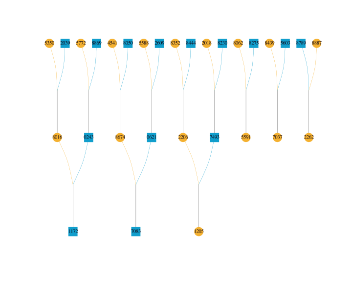
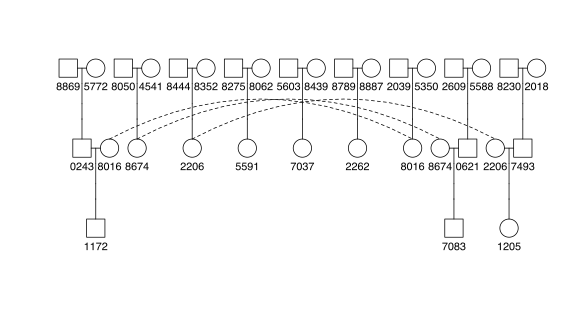
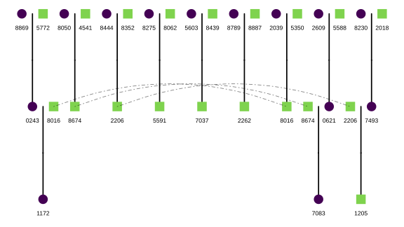
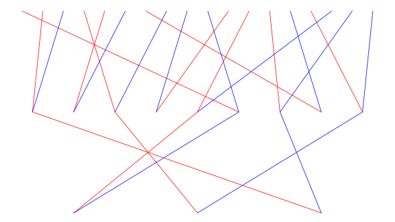
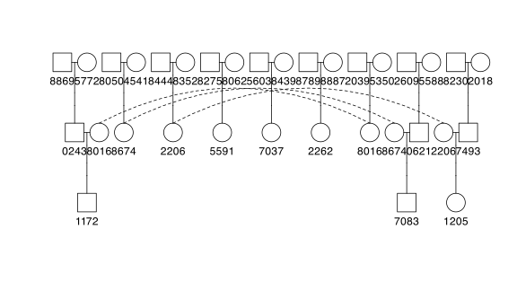
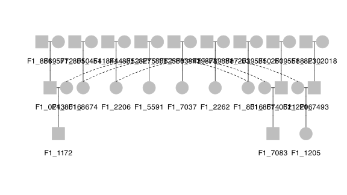
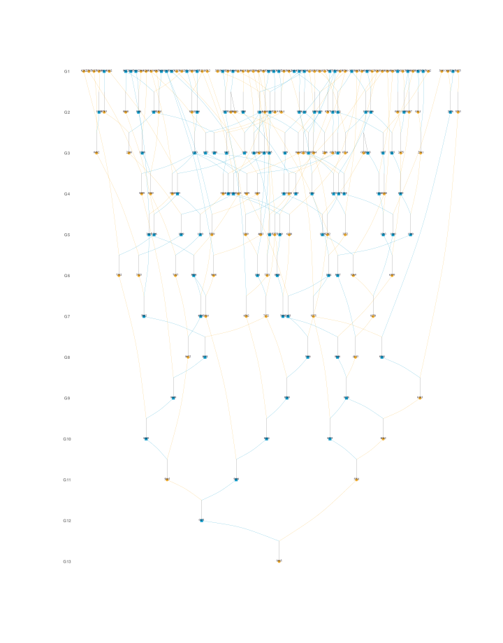

Search “plot pedigree in R” and you will meet a crowd: kinship2, the two-decade-old grandparent of the field; its modern descendants Pedixplorer and ggpedigree; pedtricks, written for quantitative genetics in wild populations; optiSel’s pedplot(), tucked inside a breeding-program optimization suite; and visPedigree, which I maintain. Seven packages, six plot functions — and several different purposes, because these packages are not really in competition with one another.
kinship2 and its descendants were designed for human family studies, where pedigrees are small, curated by hand, and complete on both parental sides. visPedigree was designed for animal and plant breeding populations, where pedigrees are large, often messy, and full of partial parentage. Each package is good at the job it was built for, and the right choice simply depends on which job is yours. For a breeding pedigree, visPedigree is the natural first choice; the others shine in the settings they were designed for.
To show what this means in practice, this article feeds the same real Hinterwald cattle pedigree to all six plotting functions, timed on the same machine, and reports what each package asks of the data along the way — because that is where the packages differ most.
The landscape
| Package | First released | Plot function | Graphics | Built for |
|---|---|---|---|---|
| kinship2 | 2004 | plot.pedigree() |
base R | Human family studies (aligned pedigree layouts) |
| pedtricks | 2016 | draw_ped() |
base R | Natural populations, quantitative genetic inference |
| visPedigree | 2018 | visped() |
base R | Breeding pedigrees, any size, integrated analysis |
| optiSel | 2018 | pedplot() |
base R (kinship2) | Optimum contribution selection |
| Pedixplorer | 2022 | plot(Pedigree) |
ggplot2 | Bioconductor pedigree explorer with a Shiny app |
| ggpedigree | 2024 | ggPedigree() |
ggplot2 + plotly | Custom-styled and interactive pedigree diagrams |
| purgeR | 2018 | — (ped_graph() builds igraph input only) |
— | Inbreeding and purging analysis |
Three of them are related: optiSel’s pedplot() calls kinship2’s plot.pedigree() under the hood, and ggpedigree incorporated kinship2’s alignment algorithms in version 1.0 as kinship2 approaches deprecation. Pedixplorer is the Bioconductor re-implementation of the kinship2 data model, with a ggplot2 plot layer and a Shiny explorer.
The same pedigree, six ways
To compare them on equal footing, I took a real pedigree down to a manageable size. From the Hinterwald cattle demo pedigree distributed with optiSel (optiSel::ExamplePed, 1,179 animals born 1947–1995), I took the ten animals born in 1995 and traced each one’s ancestry back two generations with tidyped(..., cand = ..., trace = "up", tracegen = 2). Parents that fall outside the traced set are coded as unknown — the preparation the kinship2-family tools expect — leaving a 30-animal breeding pedigree with overlapping generations, used for every panel and every small-pedigree timing below. To keep the figures readable, the labels show only the last four digits of each animal’s ID.

visped() — sex-coded shapes (circle female, square male), ancestors on top, descendants at the bottom, inbreeding coefficients optional.
plot.pedigree() — the classic aligned layout with couples side by side.
ggPedigree() — the same data through ggplot2, with fully configurable colors and shapes.
draw_ped() — individuals as dots, parents above offspring, maternal and paternal links overlaid.
pedplot() — a kinship2 layout wrapped for breeding datasets, with breed-coding built in.
plot(Pedigree) — ggplot2 rendering of the kinship2 data model.The same 30-animal Hinterwald pedigree plotted by six packages; labels show the last four digits of each animal’s ID. Nothing here required a synthetic dataset — every panel is a documented call on real breeding data.
The panels show the design trade-offs directly. kinship2 and its descendants put couples side by side in an aligned layout designed for human family studies. pedtricks stacks generations vertically with dots, designed to overlay trait data. visPedigree uses a Sugiyama layered layout — the topological sort places ancestors strictly above descendants, which is what you want when reading inheritance paths in a breeding pedigree.
One individual, traced back to the founders
The 30-animal pedigree above is small enough that every package handles it comfortably. The figure below shows the other direction visPedigree was designed for: depth. One 1995-born Hinterwald animal, traced back through thirteen generations to the founders — 205 animals in total — and drawn with a single visped() call. The layered layout places every generation on its own level, ancestors strictly above descendants, so an inheritance path reads from top to bottom:

One call: visped() on the traced pedigree, with generation labels on the left. Labels show the last four digits of each animal’s ID.
For comparison, the timings below are measured on the complete 1,179-animal pedigree behind this figure — the size where the packages show their different design targets: Pedixplorer’s default label scaling declines to render until the label size is set by hand, and the kinship2-family alignment solver spends the better part of a minute on layout. Neither is a flaw — those packages were tuned for the small, hand-curated pedigrees of human family studies. It is simply a different job.
Data preparation: what each package asks of you
Before timing anything, each package had to accept the data. This is where the packages differ most, and it is worth knowing before you start:
- kinship2 assumes complete parentage. Its
pedigree()constructor expects every individual to have both parents known or neither — the natural assumption for human-study pedigrees, less so for breeding records. The union of all ten candidates’ two-generation traces (59 animals) does not satisfy it as-is, and even the 30-animal pedigree above must have its out-of-set parents coded as unknown first. The full 1,179-animal pedigree happens to be complete, so it passes unmodified. optiSel’spedplot()and ggpedigree’sggPedigree()follow the same rule. - Pedixplorer needs hand-tuned labels on larger pedigrees. On the full 1,179-animal pedigree, the default label auto-scaling reports that labels “leave no room for the graph”. It renders after manually setting a small
cex. - ggpedigree expects a specific column contract —
personID,momID,dadID,famID,sex, and aspouseIDcolumn that must exist even when every value is missing. ID columns must also agree on class: ExamplePed’s factor-coded IDs read as numeric against the characterspouseIDcolumn, and the mixed classes abort the plot. Oneas.character()call fixes it. - pedtricks wants a sex vector as a separate argument, coded 0/1, with unknown sex mapped to one of the codes.
- optiSel’s
pedplot()requires sex as"male"/"female"character values — numeric codes 1/2 are rejected. - purgeR’s
ped_graph()requires integer ID columns — ExamplePed’s 15-digit IDs exceed R’s integer range, so they had to be remapped to 1..1179 — and unknown parents must be coded 0:NAvalues make its C-level inbreeding functions crash. And it does not plot at all: it only builds an edge list for igraph, which you must plot yourself. - visPedigree accepts the raw three-column table. Missing parents coded as
NA,0,*, or blank are standardized bytidyped(); sex is inferred or passed as-is; partial parentage, overlapping generations, and selfing are all handled. The same object then feeds analysis functions directly.
None of these are shortcomings. They are design priorities: kinship2-family tools optimize for human-study pedigree validity, visPedigree for breeding records at scale.
Timings
All timings below were measured on the same machine (Apple M2, 16 GB RAM, R 4.5.2), with one warm-up call followed by five timed repetitions, median reported. Each package’s plot call was timed inside a null PDF device, so layout computation is included and disk rendering is excluded; data and pedigree objects were prepared once, outside the timed region. Label sizes were reduced where a package required it (Pedixplorer on the full pedigree); label size changes only the text rendering, not the layout being solved.
| Package | 30 animals (median, s) | 1,179 animals (median, s) |
|---|---|---|
pedtricks draw_ped() |
0.002 | 0.036 |
optiSel pedplot() |
0.005 | 45.7 |
kinship2 plot.pedigree() |
0.005 | 45.8 |
Pedixplorer plot() |
0.042 | 49.0 |
visPedigree visped() |
0.059 | 1.94 |
ggpedigree ggPedigree() |
0.144 | 44.5 |
Two readings from this table. On a small pedigree, everything is fast — the slowest call is 0.14 seconds, and at that size the choice is purely a matter of style and of what your downstream workflow needs.
On a realistic breeding pedigree the ranking changes and the spread widens to three orders of magnitude. The gap comes from the layout algorithms, not from carelessness: kinship2 spends most of its 45.8 seconds solving an alignment problem (75 seconds with autohint() hints enabled); optiSel’s pedplot() pays the same bill because it wraps the same solver, and ggpedigree inherited kinship2’s alignment algorithms at 44.5 seconds. Pedixplorer’s ggplot2 rendering is slowest at 49.0 seconds — and that is with the label size hand-tuned, because the default declines to run at that size. pedtricks stays fast because it only sorts by depth. visPedigree sits in between: its Sugiyama layout iterates up to maxiter = 1000 passes to reduce edge crossings by default, which is the bulk of its 1.94 seconds — you can lower maxiter for draft views and raise it for final figures. purgeR has no row in the table because it has no plot function: ped_graph() builds the igraph edge list in 0.001 seconds and leaves the drawing to you.
Read the table together with the data-preparation section above: each number is the time after its package’s documented requirements were met. The requirements themselves are usually the more relevant information.
Scaling beyond plotting: the full workflow
For comparison, the full visPedigree workflow benchmark from our recent paper Luan et al. 2026, Bioinformatics Advances (reported as Table S2 there; ~20,000 individuals per generation):
| Workflow | 100k | 500k | 1M |
|---|---|---|---|
tidyped() + inbreed() |
0.19 s | 0.88 s | 1.90 s |
tidyped() + pedstats() |
0.55 s | 2.64 s | 5.61 s |
tidyped() + pediv() |
0.57 s | 2.61 s | 5.46 s |
tidyped() + pedprod() |
0.17 s | 0.86 s | 1.96 s |
These are end-to-end times on a simulated pedigree with 150 founders and 20,000 offspring per generation (1,000,150 records at the 1M scale). Benchmark data and scripts are on Zenodo (doi:10.5281/zenodo.21320956). No other package in the comparison offers a documented pipeline at this scale; this table documents where visPedigree’s design budget went — into the analysis chain behind the plot, not only into the plot.
Feature chain: what each package can do beyond the plot
The table below adapts Table S1 from Luan et al. 2026, extended with two plotting-focused packages (ggpedigree, pedtricks) that the paper did not cover. “Yes” means a documented end-user workflow; “Partial” means the quantity is derivable indirectly or exposed only as a by-product; “No” means no documented support.
| Workflow component | visPedigree | Pedixplorer | purgeR | optiSel | nadiv | kinship2 | ggpedigree | pedtricks |
|---|---|---|---|---|---|---|---|---|
| Pedigree standardization / validation | Yes | Partial | Partial | Partial | Partial | Partial | No | No |
| Candidate-centered tracing / trimming | Yes | Yes | No | Partial | Partial | Yes | No | Partial |
| Inbreeding coefficients | Yes | Partial | Yes | Yes | Partial | Partial | No | No |
| Exact partial inbreeding | Yes | No | Yes | No | No | No | No | No |
| Founder / ancestor diversity (fe, fa, fg) | Yes | No | Yes | Partial | No | No | No | No |
| Effective population size summaries | Yes | No | Yes | Yes | No | No | No | No |
| Relationship summaries / kinship | Yes | Partial | No | Yes | No | Yes | No | No |
| Relationship matrices (A, A⁻¹, non-additive) | Yes | No | No | Yes | Yes | No | No | No |
| Pedigree plotting / visualization | Yes | Yes | No | Partial | No | Yes | Yes | Yes |
| Explicit full-sib compaction for display | Yes | No | No | No | No | No | No | No |
| Temporal diversity diagnostics | Yes | No | No | No | No | No | No | No |
Notes (following the paper’s conservative coding): nadiv returns inbreeding coefficients as a by-product of makeDiiF(); kinship2 and Pedixplorer inbreeding values can be derived from the kinship-matrix diagonal; purgeR’s ped_graph() builds igraph input but the package exports no plot function; pedtricks’ draw_ped(focal = ...) plots the relatives of a focal individual (offspring, descendants, parents, ancestors, kin) and can prune to informative links, hence “Partial” for tracing.
The pattern in the table is not “which package is best” — it is “which job each package was built for”. kinship2/Pedixplorer/ggpedigree/pedtricks are plotting-and-structure tools; purgeR and optiSel are analysis tools with specific targets (purging, optimum contribution); nadiv is a matrix workbench. visPedigree is the only one whose tidyped() object carries the whole chain from standardization to analysis to plotting — which also means that users who only want a quick plot, and already have a tidy pedigree, may find it more than they need.
Which one should you use?
- You work with an animal or plant breeding pedigree — large, with overlapping generations and partial parentage — and you want analysis plus a figure (inbreeding, diversity, effective size, matrix-free products): visPedigree is the first choice, with
visped()for the plot. - You have a human family-study pedigree and want the classic aligned layout: kinship2 today, Pedixplorer or ggpedigree as the maintained successors.
- You want interactive pedigree plots with tooltips: ggpedigree’s plotly wrapper.
- You work with natural populations and want to overlay trait data or focal relatives on the pedigree: pedtricks.
- You are already inside an optiSel workflow (kinships, native contributions):
pedplot()keeps your pipeline in one package. - You need purging or inbreeding-load statistics: purgeR — pair it with a plotting package, because it has none of its own.
Disclosure and reproducibility
I am the maintainer of visPedigree. The feature-chain table adapts the published supplementary material of our paper (DOI 10.1093/bioadv/vbag210); the two added columns were verified against the current CRAN documentation of ggpedigree 1.2.0 and pedtricks 0.5.0. Every other “Yes/Partial/No” entry was re-verified against locally installed packages on 2026-08-24 before writing.
All scripts used to produce the figures and timings in this article are available in the blog repository (scripts/plot-pedigree-comparison.R for the figures, scripts/plot-pedigree-timings.R for the timings). The timing protocol is the same one used in the paper: warm-up plus five repetitions, median reported.